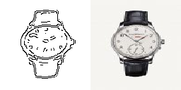
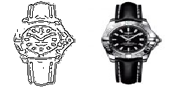

Datasets
We used a different dataset from that is used in the paper to apply the same concepts and generate the results. We use our own custom dataset which was generated as follows:
- We collected the images by scraping a couple of websites from web.
- We then used applied edge detector on the images, and generated the images in the right size and format as required by the model.
edges2tshirts dataset
Train : 2313 Images
Val : 244 Images
Sample image from this dataset is shown below (128 * 256 where the first half is the output of the edgedetector and second half is the actual image)
edges2watches dataset
Train : 11919 Images
Val : 240 Images
Sample images from this dataset is shown below (128 * 256 where the first half is the output of the edgedetector and second half is the actual image)

